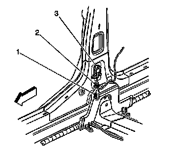
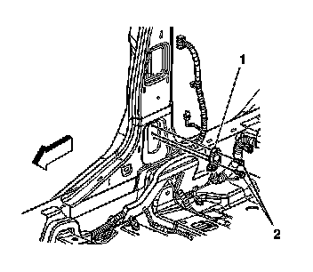

Inflatable Restraint Side Impact Sensor Replacement
Inflatable Restraint Side Impact Sensor Replacement
Removal Procedure
Caution: Do not strike or jolt the inflatable restraint side impact sensor (SIS). Before applying power to the SIS make sure that it is securely fastened. Failure to observe the correct installation procedures could cause SIR deployment, personal injury, or unnecessary SIR system repairs.
Caution: Refer to SIR Caution (SIR Caution) .
1. Disable the SIR system. Refer to SIR Disabling and Enabling (Service and Repair) .
Move the seat to the full forward position.
2. Remove the center pillar trim panel. Refer to Center Pillar Garnish Molding Replacement (Service and Repair) .

3. Remove the connector position assurance (CPA) (1) from the harness connector (2) to the inflatable restraint side impact sensor (SIS).
4. Disconnect the harness connector (2) from the SIS (3).

5. Remove the SIS mounting fasteners (2).
6. Remove the SIS (1) from the center pillar.
Installation Procedure
1. Remove any dirt, grease, or other impurities from the mounting surface.
2. Install the SIS (1) to the center pillar.
Notice: Refer to Fastener Notice .
3. Install the SIS mounting fasteners (2).
Tighten the fasteners to 9 N.m (80 lb in).
4. Install the harness connector (2) to the SIS (3).
5. Install the CPA (1) to the SIS harness connector (2).
6. Install the center pillar trim. Refer to Center Pillar Garnish Molding Replacement (Service and Repair) .
7. Move the seat to the original position.
8. Enable the SIR system. Refer to SIR Disabling and Enabling (Service and Repair) .